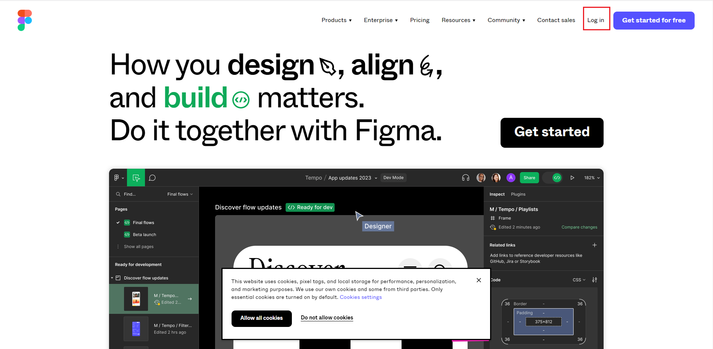
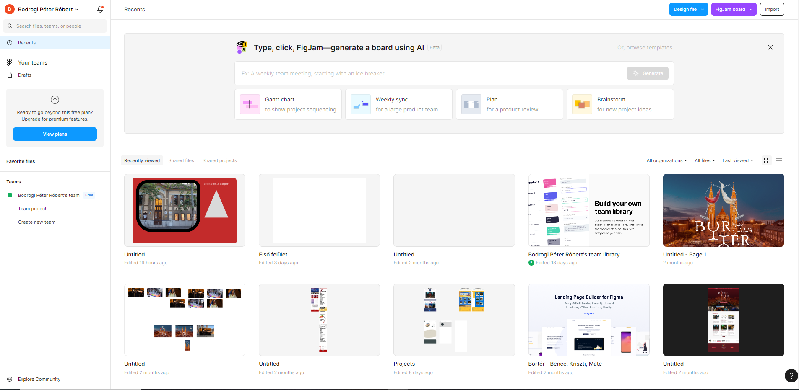
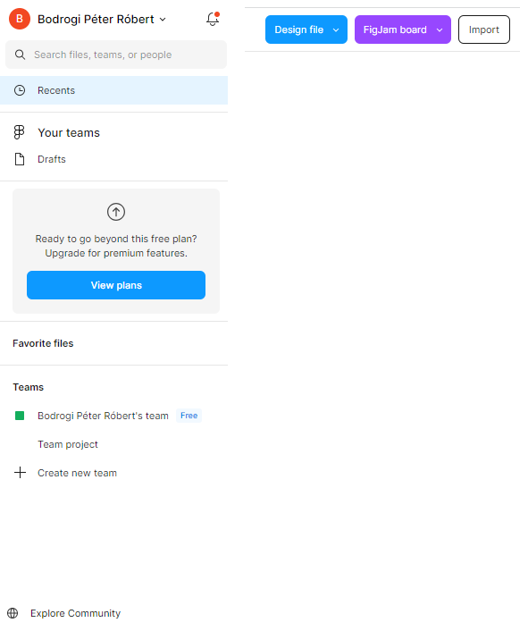
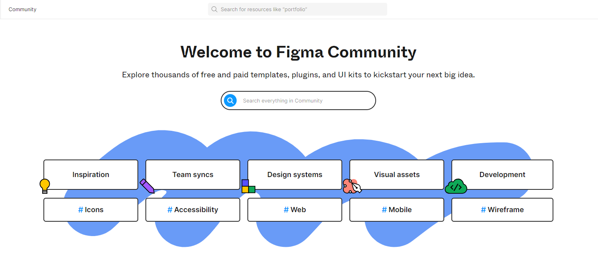
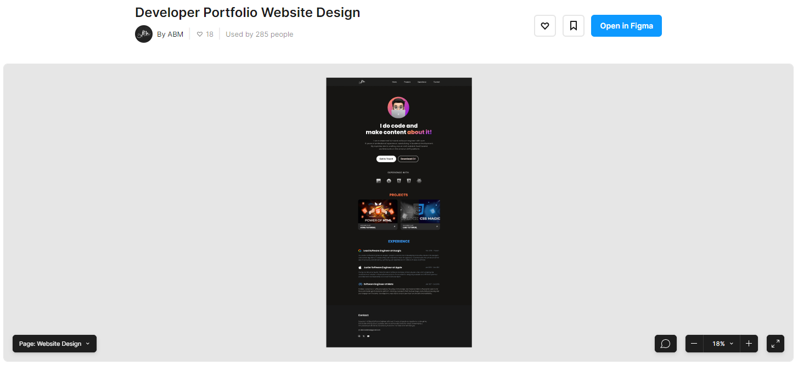
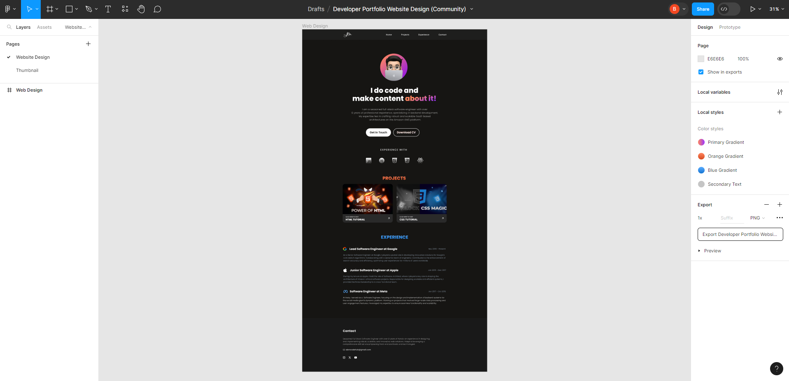
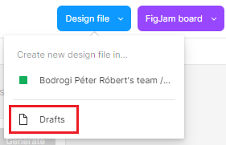

arrow_circle_up
Alapvető dolgok:
-
Figma:
-
A Figma egy
együttműködésen alapuló webalkalmazás
felülettervezéshez
, további offline funkciókkal, amelyeket a macOS és
Windows asztali alkalmazásai tesznek lehetővé.
-
A Figma szolgáltatáskészlete a
felhasználói felület és a felhasználói élmény
kialakítására összpontosít, hangsúlyt fektetve a
valós idejű együttműködésre, számos vektorgrafikus szerkesztő és prototípus
készítő eszközt használva.
-
A Figma mobilalkalmazás Androidra és iOS -re
lehetővé teszi a Figma prototípusok valós idejű
megtekintését és interakcióját mobil- és
táblagépeken.

-
Rövid történet:
-
Dylan Field és Evan Wallace 2012-ben kezdtek el a
Figmán dolgozni, miközben számítástechnikát tanultak
a Brown Egyetemen . Wallace grafikát tanult, és
tanársegéd volt a számítástechnikai tanszéken, míg
Field a CS Tanszéki Egyetemi Csoport elnöke volt.
-
A Figma eredeti célja az volt, hogy "
bárki lehessen kreatív ingyenes, egyszerű,
kreatív eszközök létrehozásával egy böngészőben ". Field és Wallace különféle ötletekkel
kísérletezett, beleértve a drónokhoz való szoftvert
és a mémgenerátort , mielőtt a webalapú grafikus
szerkesztő szoftver mellett döntöttek volna.
-
A Figma 2015. december 3-án ingyenes, csak
meghívással rendelkező előnézeti programot kínált.
Első nyilvános megjelenése 2016. szeptember 27-én
volt.
-
2019. október 22-én a Figma elindította a Figma
Communityt , amely lehetővé teszi a tervezők
számára, hogy közzétegyék munkáikat mások számára,
hogy megtekinthessék és adaptálhassák.
-
2021. április 21-én a Figma elindította a FigJam
nevű digitális táblás funkciót , amely lehetővé
teszi a felhasználók számára, hogy cetlik,
hangulatjelek és rajzeszközök segítségével
működjenek együtt.
-
2022 júniusában a Google for Education bejelentette,
hogy partnerségre lép a Figmával annak érdekében,
hogy tervezési és prototípus-készítő platformját,
valamint a FigJam-et az oktatási Chromebookokon is
elérhetővé tegye .

-
A Figma weblapjának a nyitóképe. Időről időre változhat.

-
Belépés (Log In) utáni oldal az
úgynevezett kezelőpult (dashboard).

-
Főbb alkotóelemei:
-
Recents: mostanában
szerkesztett, megnézett dolgok. Valamilyen formában
szervezve van. Projektbe, mappába stb.
-
Drafts: megtekintett
dolgok, amelyek nincsenek semmilyen formában
szervezve.
-
Your Teams / Teams:
csapatok, amiben résztveszünk, vagy csak kívülről
támogatjuk, nyomon követjük.
-
FigJam Board:
szerkesztésre kész rajztáblák (whiteboard) és
diagramok.
-
Import: külső
állományok, tervezetek beimportálása.

-
Explore Community: rengeteg
támogató tartalom plug-in-ekkel, sablonokkal, widget-ekkel.

- Válasszunk egy sablont. Lehetőleg ne fizetőset!

-
Nyissuk meg a Figma szerkesztói oldalán, és már dolgozhatunk
is vele.

-
Új tervezőlap (draft) nyitása
manuálisan. Nyitólap jobb felső sarok

Források:
Figma
Wikipedia